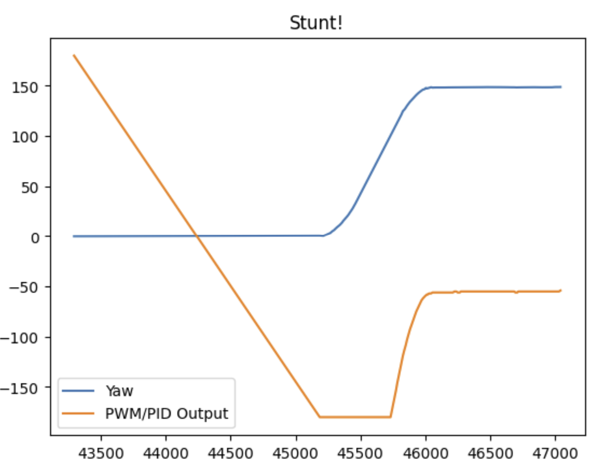

Lab 8 Stunt!
The goal of this lab was to improve on past controllers in order to be able to perform a stunt. I chose to do the drifting stunt involving orientation control. I tried the stunt with many methods, in particular by trying to implement a Kalman Filter, but for the final version settled with improving my PID control.
Modifying Orientation Control
In order to coordinate the drifting stunt, I needed to enable several flags to separate the different movements: driving forwards, turning 180 degrees, and then driving forwards again. I used a mixture of TOF readings and linear extrapolation (which I was able to fix after it did not work in lab 5!) to determine my distance from the wall. Once I was within 3 feet, I would flip a set of boolean flags to indicate that driving forward had ended, and it was time to turn. For turning, I ran a very similar angular PID from my Lab 6, however I had to slightly retune my gains after taping up the wheels. The result of a successful stunt are shown below:
Some things I implemented in order to speed up my code was:
- Increasing the pwm threshold required to make the robot turn to prevent too much oscillation that the integral controller can sometimes cause. This led for a smoother and faster turn overall by essentially establishing a cutoff for an 'okay enough turn'
- Adding linear extrapolation for estimating distance between TOF readings
Ultimately, the stunt was slower than I would have liked and the gyro exhibited some drift (data indicates about 160 degree turn, but visually I saw 180 degrees consistently). However, I am still happy with the overall performance. Other slightly worse versions are below.
The Fun Video
I bet you didn't pay attention the first time, so I added some visual aids...
Failed Kalman Filter oof
I spent a long time in this lab trying to implement a Kalman filter on the robot. I tried many implementations/restructuring of the code to try and verify the matrix math, but ultimately could not get it to work. It seems that my predict step was not working/the dynamics were never propogating forward, causing later issues with my update step and the filter as a whole. This was pretty disappointing, and I ended up spending several days on it before switching back to PID. I hope to still finish implementing the Kalman filter eventually in order to explore other filters for other classes of mine. The (broken) code is shown below...